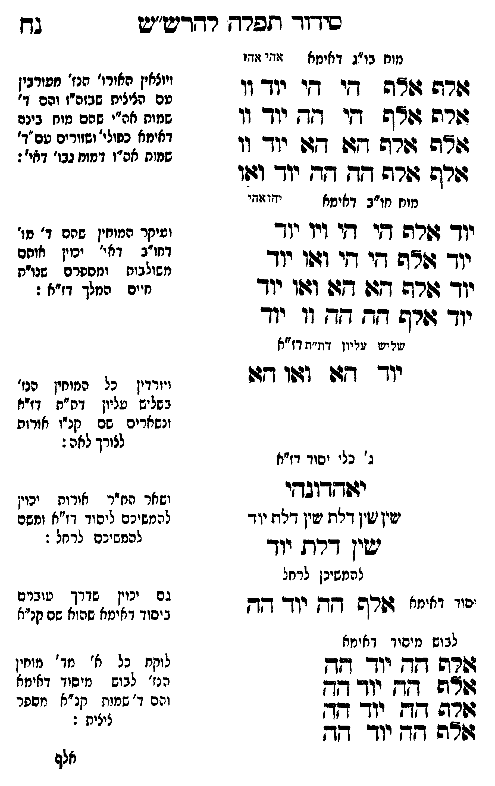

Neue Klartextfassung
[מוח בו"ג דאימא — אהי אהו] אלף אלף הי הי יוד וו אלף אלף הי הה יוד וו אלף אלף הא הא יוד וו אלף אלף הה הה יוד ואו [ויוצאין האורו' הנז' מעורבין עם הציצית שבזה"ז והם ד' שמות אה"י שהם מוח בינה דאימא כפולי' ושזורים עם ד' שמות אה"ו דמוח גבו' דאי':] [מוח חו"ב דאימא — יהו אהי] יוד אלף הי הי ויו יוד יוד אלף הי הי ואו יוד יוד אלף הא הא ואו יוד יוד אלף הה הה וו יוד [ועיקר המוחין שהם ד' מו' דחו"ב דאי' יכוין אותם משולבות ומספרם שנו"ת חיים המלך דז"א:] [שליש עליון דת"ת דז"א] יוד הא ואו הא [ויורדין כל המוחין הנז' בשליש עליון דת"ת דז"א ונשארים שם קנ"ו אורות לצורך לאה:] [ג' כלי יסוד דז"א] יאהדונהי שין שין דלת שין דלת יוד שין דלת יוד [ושאר הת"ר אורות יכוין להמשיכם ליסוד דז"א ומשם להמשיכם לרחל:] [להמשיכן לרחל] [יסוד דאימא] אלף הה יוד הה [גם יכוין שדרך עוברים ביסוד דאימא שהוא שם קנ"א] [לבוש מיסוד דאימא] אלף הה יוד הה אלף הה יוד הה אלף הה יוד הה אלף הה יוד הה [לוקח כל א' מד' מוחין הנז' לבוש מיסוד דאימא והם ד' שמות קנ"א מספר ציצית:]
Original gegen neue OCR · Niqqud für Vergleich ausgeblendet
Original
[מוחK120-001 בו"ג דאימא — אהי אהו] אלף אלף הי היK120-002 יוד וו אלף אלף הי הה יוד וו אלף אלף הא הא יוד וו אלף אלף הה הה יוד ואו [ויוצאין האורו' הנז' מעורביןK120-003 עם הציצית שבזה"ז והם ד' שמותK120-004 אה"י שהם מוח בינהK120-005 דאימא כפולי' ושזורים עם ד' שמותK120-006 אה"ו דמוח גבו' דאי':] [מוחK120-007 חו"ב דאימא — יהו אהי] יוד אלף הי הי ויו יוד יוד אלף הי הי ואו יוד יוד אלף הא הא ואו יוד יוד אלף הה הה וו יוד [ועיקרK120-008 המוחין שהם ד' מו' דחו"ב דאי' יכוין אותםK120-009 משולבות ומספרם שנו"תK120-010 חיים המלך דז"א:] [שליש עליוןK120-011 דת"ת דז"א]K120-012 יוד הא ואו הא [ויורדיןK120-013 כל המוחין הנז' בשליש עליון דת"ת דז"אK120-014 ונשארים שם קנ"ו אורות לצורך לאה:] [ג'K120-015 כלי יסוד דז"א] יאהדונהיK120-016 שין שין דלתK120-017 שין דלת יוד שין דלת יוד [ושאר הת"ר אורות יכויןK120-018 להמשיכם ליסוד דז"א ומשםK120-019 להמשיכם לרחל:] [להמשיכן לרחל] [יסוד דאימא] אלף הה יוד הה [גםK120-020 יכוין שדרך עובריםK120-021 ביסוד דאימא שהוא שם קנ"א] [לבוש מיסוד דאימא] אלף הה יוד הה אלף הה יוד הה אלף הה יוד הה אלף הה יוד הה [לוקחK120-022 כל א' מד' מוחין ∅K120-023 הנז' לבוש מיסוד דאימא ∅K120-024 והם ד' שמות קנ"אK120-025 מספר ציצית:]K120-026
OCR · fehlbar
סיךךך- תפרח רדדיע"ש בךץ מוחK120-001 בו"ג דאימא זוגי זודו - ויוצאין האירו' הנז' מטורבי גזרה ווה די דיK120-002 יוד וו ∅K120-003 עם הציצית שבזה"ז והם ) גשרש דו"ש די דד יוך וו שמוחK120-004 אה"י שהם מוח בינםK120-005 דאימא כפולי' ושזורים עס"ד' לא: זלנד 70 מזי 2ד ((. שמוחK120-006 אה"ו דמוח גבו' דאי': וורש גזרה 7 דד יוך וגו מוחK120-007 חו"ב דאימא ידוז:זזי יזך' 4ל[רפ דקי די דיך יןך ועיקרK120-008 המוחין שהם ד' מו' דחו"ב דאי' יכוין אוחם יוך דודה די די וג(ו יודK120-009 משולבות יי: שנוית יוך דשרה דזו דגד וגוו יוךK120-010 חיים המלך דז"א : יוד רף דד. דד וו יוד ישוישט עמיוןK120-011 דת"ת דז"אK120-012 יוד דז: וגלו דגבו ויוקדיןK120-013 כל המוחין הנז' בשליש עליון דת"ח דזינזK120-014 ונשארים שם קנ"ו אורות לצורך לאה: ג'K120-015 כלי יסוך דו"א יזוחדובדי ושאר הת"ר אורוח יכויןK120-016 שין ישין דפתK120-017 שין דלת יוד ∅K120-018 להמשיכם ליסוד דז"א ומשפ ישין דרק ל[שK120-019 להמשיכם לרחל : להמשיכן לרחל : ל גםK120-020 יכוין שדרך עובים היי יאימי' שרה דד יוד דדK120-021 ביסוד דאימא שהוא שם קנ"א לבוש מיסוך דאימא שרפ דדן יוך [- לוקחK120-022 כל א' מד' מוחין שש -(- יוך ג-K120-023 הנז' לבוש מיסוד דאימא ללא[ללשלל[קללK120-024 והם ד דנוK120-025 מספר גוה דדן יודך דד אלףK120-026